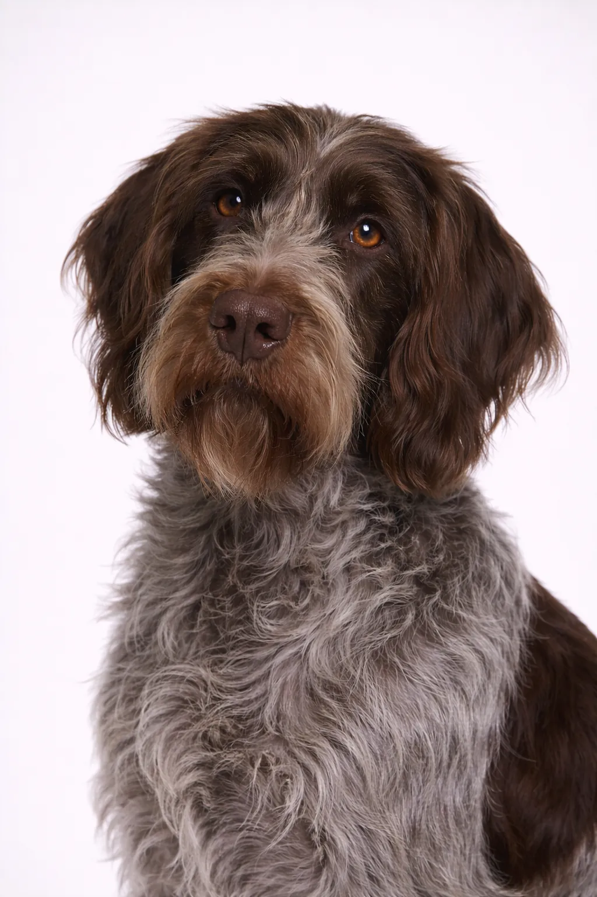

Wirehaired Pointing Griffon
Known as the 'supreme gundog,' the Wirehaired Pointing Griffon excels at pointing and retrieving. Their rough coat protects them in harsh terrain.
20-24 in
51-59 lbs
Breed Ratings
Temperament
Overview
Known as the 'supreme gundog,' the Wirehaired Pointing Griffon excels at pointing and retrieving. Their rough coat protects them in harsh terrain.
Temperament
The Wirehaired Pointing Griffon is known for being friendly, devoted, trainable. They're excellent with children and make wonderful family pets. Their intelligence and eagerness to please make training enjoyable. Early socialization helps them develop into well-rounded companions.
Health
Generally healthy with a lifespan of 12-15 years. Common concerns include joint problems. Regular veterinary checkups and preventive care are important. Maintaining a healthy weight helps prevent many health issues.
Exercise
High energy breed requiring vigorous daily exercise—at least an hour of activity. They thrive with active families who enjoy outdoor activities. Mental stimulation through training and puzzle toys is equally important. Without adequate exercise, they may develop behavioral issues.
Breed Ratings
Temperament
Overview
Known as the 'supreme gundog,' the Wirehaired Pointing Griffon excels at pointing and retrieving. Their rough coat protects them in harsh terrain.
Temperament
The Wirehaired Pointing Griffon is known for being friendly, devoted, trainable. They're excellent with children and make wonderful family pets. Their intelligence and eagerness to please make training enjoyable. Early socialization helps them develop into well-rounded companions.
Health
Generally healthy with a lifespan of 12-15 years. Common concerns include joint problems. Regular veterinary checkups and preventive care are important. Maintaining a healthy weight helps prevent many health issues.
Exercise
High energy breed requiring vigorous daily exercise—at least an hour of activity. They thrive with active families who enjoy outdoor activities. Mental stimulation through training and puzzle toys is equally important. Without adequate exercise, they may develop behavioral issues.
⦿ Is This Breed Right for You?
✓ Best For
- Hunters
- Active families
- Those wanting a versatile dog
✗ Not Ideal For
- Apartment dwellers
- Inactive owners
Our Verdict: Known as the 'supreme gundog,' the Wirehaired Pointing Griffon excels at pointing and retrieving. Their rough coat protects them in harsh terrain.